게임 클라이언트 프로그래머
김석호
C++과 DirectX 11을 주력으로, 프로젝트마다 다른 시스템을 만들고 새 기술을 더해 왔습니다.
수학부터 직접 구현한 충돌과 그림자, 팀이 함께 쓴 이펙트 시스템과 툴, 팀 작업에 접목한 AI까지. 프로젝트마다 가장 공들인 구현과, 막혔던 문제를 푼 과정을 골라 담았습니다.
C++과 DirectX 11을 주력으로, 프로젝트마다 다른 시스템을 만들고 새 기술을 더해 왔습니다.
수학부터 직접 구현한 충돌과 그림자, 팀이 함께 쓴 이펙트 시스템과 툴, 팀 작업에 접목한 AI까지. 프로젝트마다 가장 공들인 구현과, 막혔던 문제를 푼 과정을 골라 담았습니다.
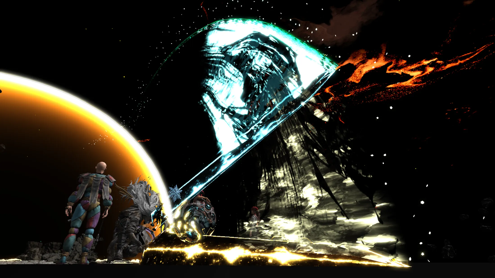
프로그래머 8명이 함께 만든 모작에서 이펙트를 혼자 맡았습니다. 이펙트 런타임 설계부터 이펙트를 만드는 툴(EffectEditor), 게임 안 전투 이펙트까지 직접 만들었습니다.
검 여섯 자루를 자루마다 Mesh 이미터 다섯 개와 Ribbon 하나로 쌓았습니다. Mesh 이미터는 살아 있는 검을 인스턴싱으로 한 번에 그립니다.
이미터 40개Mesh ×30Ribbon ×6Sprite ×4
시작·충전·유성·빔·최종 폭발, 다섯 파일이 애니메이션의 정해진 시점에 차례로 재생됩니다. 불꽃과 빛은 Sprite, 유성과 폭발 파편은 Mesh, 하늘에서 내리는 광선은 Beam이 맡았습니다.
이미터 45개Sprite ×28Mesh ×16Beam ×1
손 소켓과 발사체가 지나간 자리를 SpriteTrail이 따라가며 번개 꼬리를 남깁니다. 손과 궤적은 애니메이션 노티파이 구간 내내 유지되고, 그 안에서 해방 이펙트가 터집니다.
이미터 16개Sprite ×11SpriteTrail ×5
Trail 네 개가 검을 따라 띠를 그리고, SpriteTrail이 그 궤적 위에 입자를 흩뿌리고, Ribbon이 꼬리를 붙입니다. 같은 구성을 색만 바꿔 13가지로 썼습니다.
이미터 6개Trail ×4SpriteTrail ×1Ribbon ×1
파티클 상태는 GPU 버퍼에 두고, 매 프레임 compute 셰이더가 슬롯마다 갱신해 그릴 데이터를 만듭니다. 그 결과를 GPU 안에서 복사해 Indirect Draw로 그리므로, 그리는 과정에서 CPU가 파티클을 하나씩 만지거나 되읽지 않습니다.
✕ 그리기 경로에 되읽기 없음
CPU가 넘기는 것은 스폰 요청 수, 시간, 재생 순번 같은 몇 개의 값뿐입니다.
Ribbon이 파티클을 따라갈 때만 위치를 읽어 옵니다.
입자 하나가 인스턴스 하나라, Draw 호출 한 번으로 전부 그립니다.
CHECK_FAILED(Reset_IndirectArgs());CHECK_FAILED(_computeShader->Dispatch((_instanceCount + kThreadCountX -코드VIBufferCom_ComputePointParticle.cpp1) / kThreadCountX,1,1));CHECK_FAILED(Copy_OutputToInstanceVB());CHECK_FAILED(Copy_OutputToIndirectArgs());… _context->DrawIndexedInstancedIndirect(_indirectArgsBuffer.Get(),0);
언리얼 Cascade 파티클 시스템처럼, 에디터에서 정한 지연 · 지속시간 · 반복 횟수가 실제 재생 규칙이 되도록 연결했습니다. 예시: 지연 0.05초 · 재생 0.30초, 이번 프레임 0.15초
재생 구간에서는 이번 반복이 끝나는 지점까지만 쓰고, 남은 시간은 다음 반복으로 넘깁니다.
지연 구간에서는 지연이 끝나는 지점까지만 시간을 씁니다.
while을 세 번 돌며 나눠 씁니다. 스폰은 재생 몫(0.07 + 0.03초)만큼만 셉니다.
float remainingTime = safeDeltaTime;while (remainingTime >코드ComputeSpriteEmitter.cpp · 한 프레임의 시간을 구간 단위로 나눠 쓰는 루프0.f&& PlaybackState::Completed != _playbackState){ const float delay = Resolve_CurrentLoopDelay(); if (_loopElapsedTime < delay) { _playbackState = PlaybackState::Delayed; const float delayStep = min(remainingTime, delay - _loopElapsedTime); _loopElapsedTime += delayStep; remainingTime -= delayStep; if (_loopElapsedTime < delay || remainingTime <=0.f) break; } _playbackState = PlaybackState::Playing; const float duration = Resolve_Duration(); const float currentPlaybackTime = max(0.f, _loopElapsedTime - delay); const float remainingPlaybackTime = max(0.f, duration - currentPlaybackTime); const float playbackStep = min(remainingTime, remainingPlaybackTime); if (playbackStep >0.f) { tick.computeDeltaTime += playbackStep; const uint32 spawnRequest = Consume_SpawnRequest(playbackStep); if (spawnRequest >0u&& tick.spawnRequest ==0u) tick.spawnSerialBase = _spawnSerialCounter; tick.spawnRequest += spawnRequest; … _loopElapsedTime += playbackStep; remainingTime -= playbackStep; } … }
예시: 프레임마다 0.12초씩 재생, 반복 길이 0.60초, 버스트 0.30초 · 16개. 칸 하나는 한 프레임이 재생한 시간 구간입니다.
0.30초를 정확히 밟는 프레임은 없지만, 0.24–0.36초 구간이 품고 있어 한 번 실행됩니다.
이전 시각 ≤ 버스트 시각 ≤ 현재 시각이면 실행하고 표시를 남깁니다. 표시는 다음 반복이 시작될 때 지워져, 반복마다 정확히 한 번 실행됩니다.
위치를 프레임마다 한 번 기록하니, 빠른 검격에서는 점 사이가 벌어져 잔상이 각지게 꺾였습니다.
점을 지나는 Catmull-Rom 곡선으로 잇고, 구간 길이를 간격으로 나눈 만큼만 채웠습니다. 기록한 점도 한 번 다듬어 접선이 튀지 않게 했습니다.
이 예시에서 점 6개가 22개가 됩니다. 느린 구간은 거의 늘지 않고, 나이도 같은 비율로 보간해 꼬리의 폭과 투명도가 끊기지 않습니다.
const float sampleSpacing = max(kMinSampleSpacing, _desc.sampleSpacing); const uint32 lastIndex = static_cast<uint32>(_history.size() -코드ComputeTrailEmitter.cpp1u); for (uint32 index =0; index +1u< visibleCount; ++index) { constEffectTrailSamplep0 = Build_SmoothedHistorySample(index >0u? index -1u: index); constEffectTrailSamplep1 = Build_SmoothedHistorySample(index); constEffectTrailSamplep2 = Build_SmoothedHistorySample(index +1u); constEffectTrailSamplep3 = Build_SmoothedHistorySample(min(index +2u, lastIndex)); const float centerDistance = Compute_TrailCenterDistance(p1, p2); const uint32 stepCount = min(max(1u, static_cast<uint32>(ceilf(centerDistance / sampleSpacing))), maxIntervalSubdivision); for (uint32 step =1u; step <= stepCount; ++step) { const float ratio = static_cast<float>(step) / stepCount;TrailRenderSamplerenderSample{}; renderSample.sample = Catmull_RomTrailSample(p0, p1, p2, p3, ratio); renderSample.age = _history[index].age + (_history[index +1u].age - _history[index].age) * ratio; outSamples.push_back(renderSample); } }
툴에서 본 이펙트와 게임에서 나오는 이펙트가 다르면 툴을 믿을 수 없습니다. 에디터 프리뷰도 게임과 같은 이펙트 풀에서 꺼내, 저장 파일과 같은 정의 데이터로 재생하게 했습니다. 팀원 4명도 이 툴로 직접 이펙트를 만들었습니다.

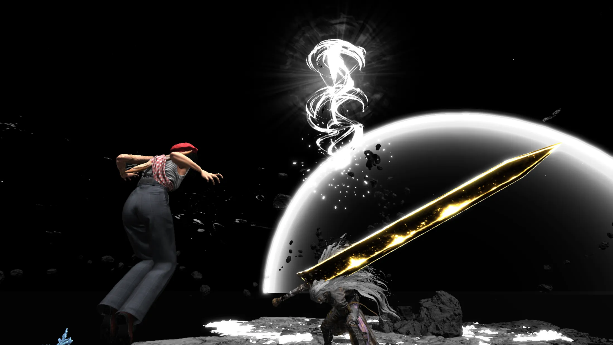
에디터EffectEditor에서 만든 유성 이펙트 게임 화면같은 파일을 게임에서 재생툴은 만들고 저장하는 일만, 게임은 불러오는 일만 맡기고, 재생 정의(EffectDefinition)는 엔진에 하나만 두었습니다.
게임은 툴에서 저장한 JSON을 불러와, 툴 미리보기와 같은 EffectDefinition으로 재생합니다.
EngineEffectEmitterFactory.cpp · 종류를 모른 채 등록된 생성 함수만 호출Shared<EffectEmitter> EffectEmitterFactory::Create_EffectEmitter( constEffectEmitterDefinition& emitterDefinition) { if (nullptr == gCreateEmitterFn) return nullptr; return gCreateEmitterFn(emitterDefinition);}
void Register_ClientEffectEmitters()
{ EffectEmitterFactory::Register_CreateEmitterFn( &Create_ClientEffectEmitter);}
ClientEffectEmitterRegistration.cpp · 시작할 때 Client가 등록
재생 · 생성 규칙은 Engine(DLL)에, 종류별 구현은 Client(static lib)에 둡니다. 실제 이미터 6종은 시작할 때 Factory에 등록해, 공용 프레임워크(Engine)가 게임 코드(Client)에 의존하지 않습니다.
EffectEditor · 메인 에디터 · 게임이 같은 Client lib을 링크하므로, 에디터에서 본 이펙트가 같은 이미터 코드로 재생됩니다.

DirectX 11 수업 프레임워크를 다듬고 확장해, 레벨 에디터 · 전투 · 렌더링까지 구현한 3D 개인 프로젝트입니다.
면 법선 6개와 변 방향 외적 9개, 15개 축에 두 상자를 차례로 투영합니다. 하나라도 갈라지면 충돌이 아니고, 모두 겹치면 가장 얕은 축이 법선과 깊이가 됩니다.
하나라도 갈라지면 충돌 아님 · 모두 겹치면 가장 얕은 축 = 법선 · 깊이
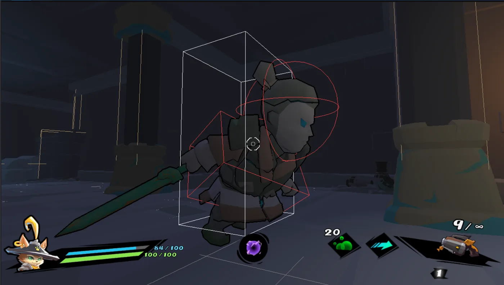
디버그 화면충돌체를 그려 확인하는 모습… const auto testAxis = [&](const코드CBounding_OBB.cppVector3& axis) -> bool { const float axisLengthSq = axis.LengthSquared(); if (axisLengthSq <=1e-6f) return true; const float axisLength = sqrtf(axisLengthSq); constVector3unitAxis = axis / axisLength; const float radiusSelf = projectRadius(unitAxis, selfAxes, self.Extents); const float radiusTarget = projectRadius(unitAxis, targetAxes, target.Extents); const float distance = centerDelta.Dot(unitAxis); const float depth = radiusSelf + radiusTarget - abs(distance); if (depth <0.f) return false; if (!hasBestAxis || depth < bestDepth) { hasBestAxis = true; bestDepth = depth; if (distance >=0.f) bestNormal = unitAxis *-1.f; else bestNormal = unitAxis; } return true; };
구간이 매번 2/3로 · 24회 반복 → (2/3)²⁴ ≈ 6e-5
상자로는 세로로 긴 몸을 덮을 수 없어 캡슐을 더했습니다. 선분과 상자에서 가장 가까운 점만 찾으면 나머지는 구와 똑같이 풀립니다.
선분을 상자 로컬로 옮기면 상자가 축에 정렬돼 거리 계산이 단순해집니다. 선분 위의 점 P(t) = 시작 + t · 방향에서 상자까지의 거리²가 가장 작은 t를 삼분 탐색으로 찾습니다.
레이 하나에 벽 · 적 · 보스 투사체가 함께 걸립니다. 종류별로 가장 가까운 것을 찾고, 거리로 하나만 골랐습니다. 벽 너머는 판정하지 않고, 가장 앞에 있는 대상만 맞습니다.
const bool hasMonster = Try_FindNearestMonsterHitscanTarget(release, monster, monsterHit);const bool hasMap = Try_FindNearestMapOccluderHitscanTarget(release, mapHit);const bool hasStone = Try_FindNearestTrackingStoneProjectileHitscanTarget( release, stone, stoneHit);if (!hasMonster && !hasMap && !hasStone)
return false;
const float tieEpsilon = 1e-6f;const bool mapBlocks = hasMap
&& (!hasMonster || mapHit.hitDistance <= monsterHit.hitDistance + tieEpsilon)
&& (!hasStone || mapHit.hitDistance <= stoneHit.hitDistance + tieEpsilon);
if (mapBlocks){
out.selectedEndPointWorld = mapHit.hitPositionWorld;
return true;
}
if (hasStone && (!hasMonster || stoneHit.hitDistance <= monsterHit.hitDistance + tieEpsilon)){
out.selectedEndPointWorld = stoneHit.hitPositionWorld;
out.shouldBreakTrackingStoneProjectile = true;
return true;
}
if (!hasMonster) return false;
out.selectedEndPointWorld = monsterHit.hitPositionWorld;
out.shouldApplyMonsterDamage = true;
코드CPlayerCombatCom.cpp · Try_ResolveReleasedHitscanResult 발췌
 에디터히트박스 표시를 켠 모습
에디터히트박스 표시를 켠 모습
캡슐 9개(몸통 1 · 팔 4 · 다리 4)와 머리 구. 본 두 개를 잇는 선분에서 캡슐의 위치 · 회전 · 길이가 정해집니다.
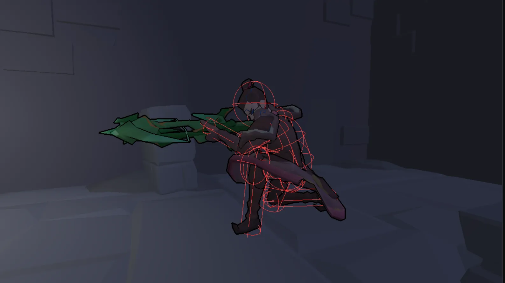
에디터앉아 조준하는 자세앉아 조준할 때도 히트박스가 본을 따라갑니다.
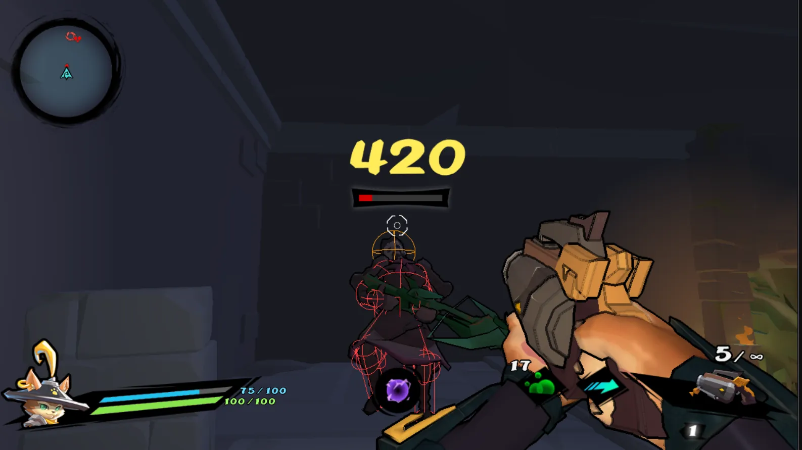
게임 화면머리를 맞혔을 때파츠는 맞으면 루트에 알리기만 하고, 약점 판정과 피해 배율은 루트가 정합니다. 같은 거리면 머리가 우선입니다.
햇빛 역할의 방향성 조명 하나를 두고, 그 방향으로 그림자 카메라를 맞춥니다. 디퍼드 조명에는 이 빛에만 그림자를 적용합니다.
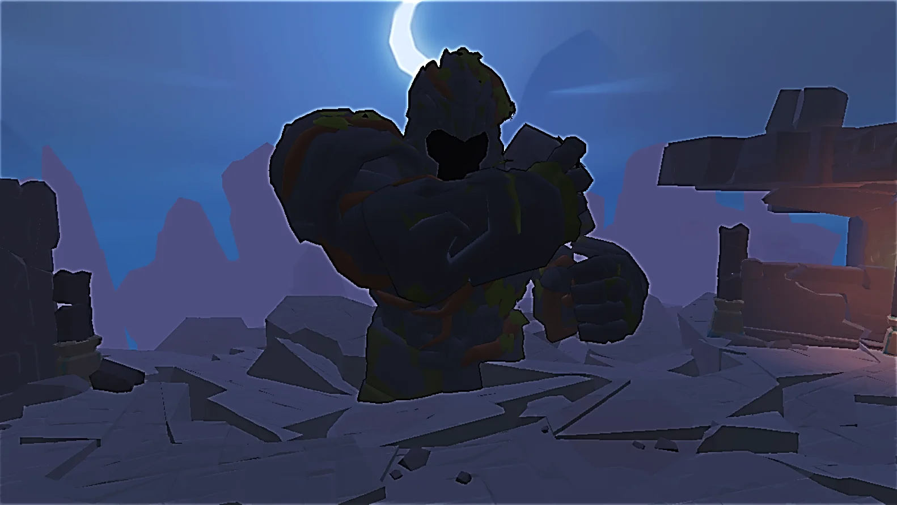
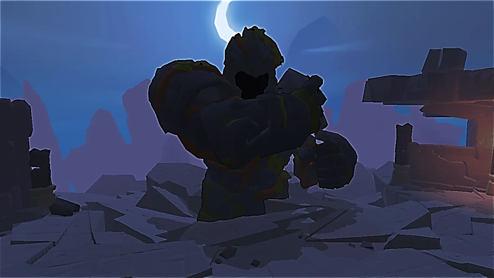
그림자 끔 그림자 켬카메라 앞 60m를 가까운 18m와 먼 18~60m로 나눠 동적 그림자 맵 2단에 그립니다. 카메라가 돌아도 흔들리지 않게 맵 위치를 격자에 맞춥니다.
움직이지 않는 모델의 그림자는 정적 그림자 맵에 한 번만 굽습니다. 매 프레임 그리는 대상에서는 빼고, 에디터에서 켠 모델만 굽습니다.
const bool cascadeOn = g_fCascadeShadowEnabled >코드Shader_Deferred.hlsl0.5f; if (cascadeOn && viewZ <= g_vShadowCascadeSplitDepths.x) cascadeShadow = Compute_ShadowFactorForCascade(worldPos, normal, lightDir, g_ShadowViewMatrix0, g_ShadowProjMatrix0, g_ShadowDepthTexture0); else if (cascadeOn && viewZ <= g_vShadowCascadeSplitDepths.y) cascadeShadow = Compute_ShadowFactorForCascade(worldPos, normal, lightDir, g_ShadowViewMatrix1, g_ShadowProjMatrix1, g_ShadowDepthTexture1); … return min(cascadeShadow, staticShadow);
class ENGINE_DLLCGameInstancefinal : publicCBase{ public: staticCGameInstance* GetInstance(); … private: unique_ptr<CGraphicDevice> m_graphicDevice; unique_ptr<CLevelManager> m_levelManager; unique_ptr<CRenderer> m_renderer; … };
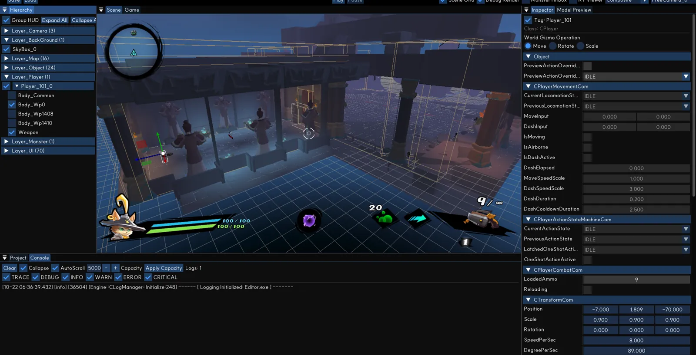
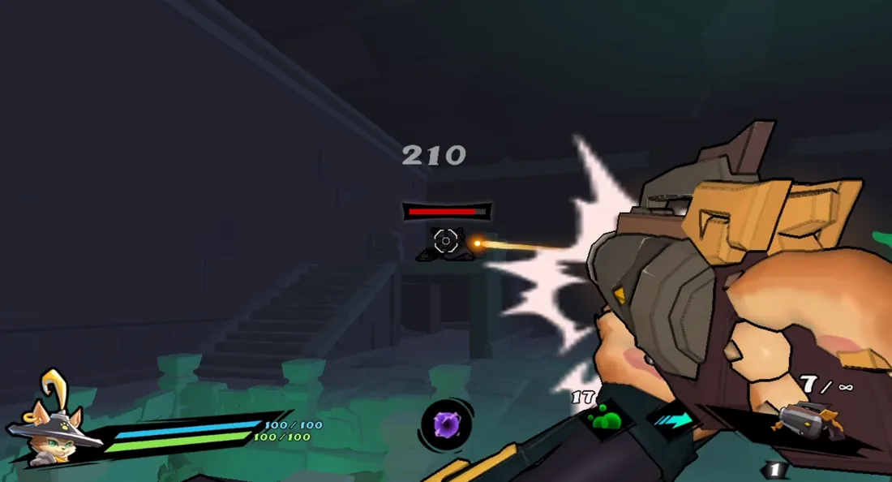

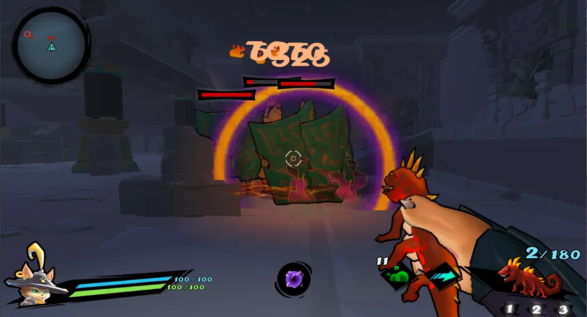
에디터무기마다 팔과 무기를 한 모델로 묶은 계층
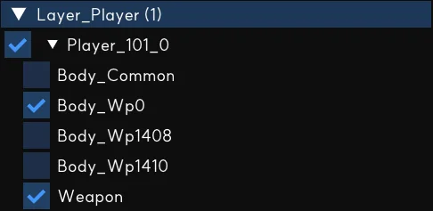
무기 애니메이션에는 팔 움직임이 같이 들어 있는데, 팔은 플레이어 몸통 모델의 뼈대입니다. 뼈대가 다르면 변환한 애니메이션이 붙지 않았습니다.
먼저 무기 쪽 상체 포즈를 몸통의 같은 이름 본으로 넘겨 봤습니다. 누적 행렬이 아닌 로컬 포즈로 넘겨야 했고, 몸통이 무기보다 먼저 갱신되는 순서도 걸렸습니다. 다음에는 변환 툴에서 상체 클립만 따로 뽑아 몸통이 직접 재생하게 하는 쪽으로 바꿨습니다.
Unity에서 팔과 무기를 한 모델로 묶어 애니메이션을 입혀 FBX로 내보내고, 직접 만든 변환 툴(Assimp)로 게임용 데이터로 바꿨습니다. 게임에는 무기마다 그 무기용 몸통 모델을 두고, 무기를 바꾸면 팔을 내리고 드는 모션에 맞춰 갈아 끼웁니다.
뼈대 사이에서 포즈를 넘기는 런타임 계층이 필요 없어졌습니다. 몸통과 무기는 각자 자기 애니메이션만 재생하고, 무기는 손 소켓에 붙습니다.
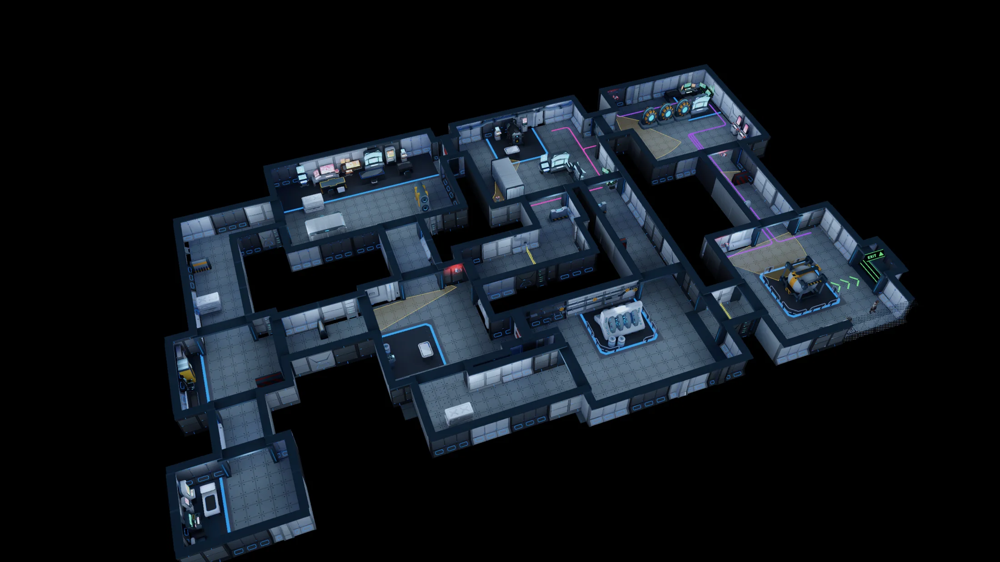
적의 행운(0~99 숫자)을 해킹으로 빼앗아 보안 시설을 층별로 돌파하는 Unity 3D SF 잠입 액션입니다.


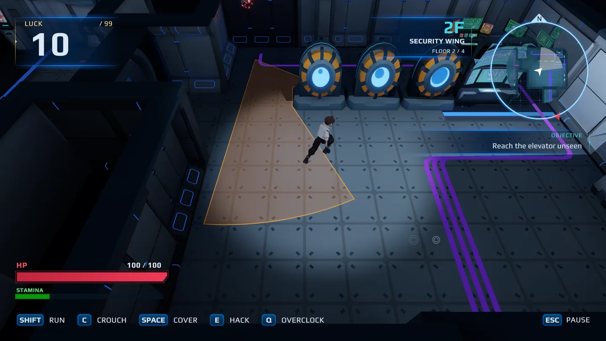

시야에 들어오는 즉시 게임 오버이던 감시를, 거리에 따라 차는 노출 게이지와 층 경보(경보 → 수색 → 평상)로 바꿨습니다. CCTV와 몬스터는 같은 방식으로 감시합니다.
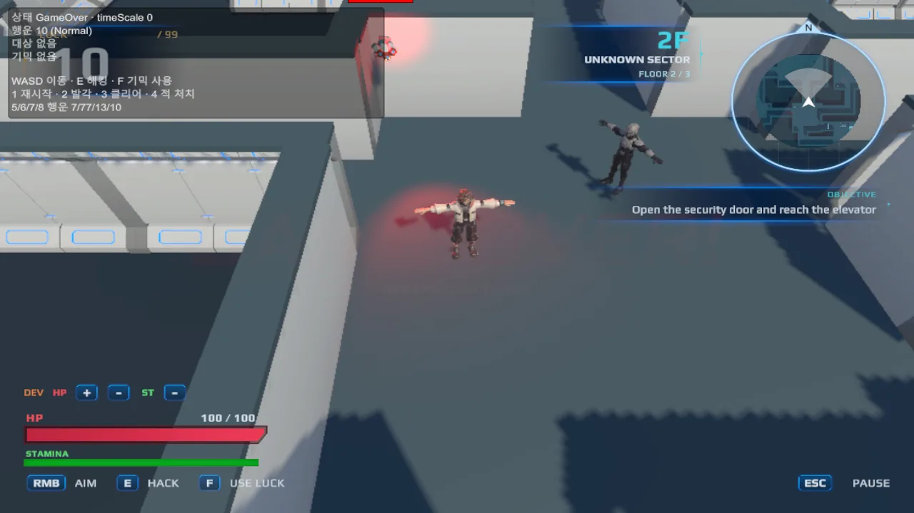
작업 전게임 화면보이면 즉시 게임 오버였습니다.
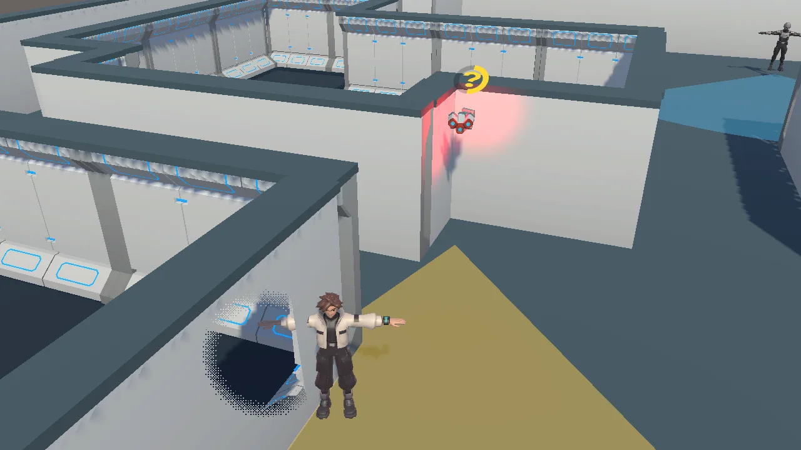
게이지 0.5게임 화면시야에 들어오면 노출 게이지가 찹니다. 머리 위에 노란 ?와 반 찬 링이 뜹니다.
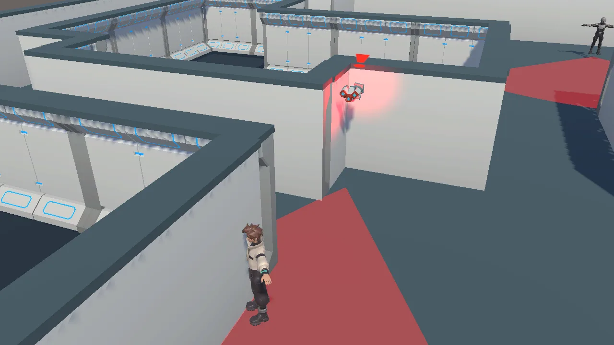
게이지 가득게임 화면게이지가 가득 차면 빨간 !가 뜨고 층 경보가 울립니다.
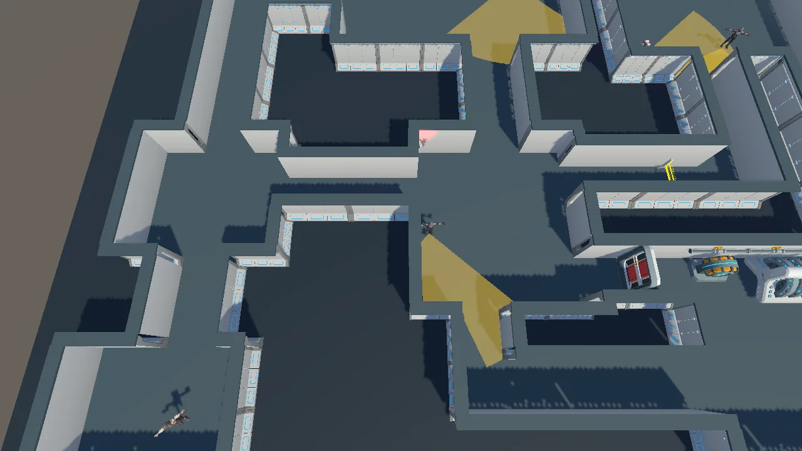
수색게임 화면적이 경보 위치로 와서 둘러봅니다. 시야 밖에 있으면 게이지가 줄어 회복할 수 있습니다.
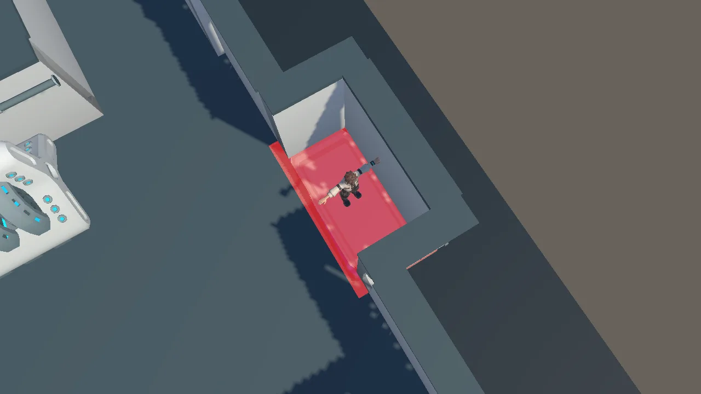
출구 잠김게임 화면경보 · 수색 중에는 출구가 잠깁니다.
public void Tick(bool inSight, float distance01,코드Vision/ExposureGauge.cs · TickAlertLevellevel, float deltaTime) { if (inSight) { if (level == AlertLevel.Alert || _settings == null) { Value =1f; return; } float fillTime = _settings.GetFillTime(distance01); if (level == AlertLevel.Search) fillTime /= _settings.SearchMultiplier; Value = fillTime >0f? Clamp01(Value + deltaTime / fillTime) :1f; return; } Value = _settings != null ? Clamp01(Value - _settings.DecayPerSecond * deltaTime) :0f;}
적 상태 머신은 팀원 코드라, 둘러보기와 경보 수신만 합의한 뒤 고쳤습니다.
둘러보기가 ±60°를 초당 360°로 왕복하고 있었습니다. 사인파 스윕(최대 약 125°/초)으로 바꿨습니다.
부채꼴이 376프레임 중 260프레임 멈춰 있었고, 최대 12.4° 튀었습니다. 매 프레임 다시 그리게 했습니다.
행운 값은 PlayerLuck, 숫자 판정은 LuckRules, 게임 상태와 Time.timeScale은 GameManager 하나만 바꿉니다. 적 · 기믹 · 미니게임은 인터페이스와 이벤트로만 이 셋에 닿게 해, 세 사람이 영역을 나눠 동시에 작업했습니다.
새 기능은 주인을 건드리지 않고 접점 인터페이스를 더해 붙였습니다.
public bool TrySpendOn(코드Luck/PlayerLuck.cs · TrySpendOnILuckSpendabletarget) { if (target == null || !target.CanActivate) return false; int cost = target.Cost; if (_current < cost) return false; SetValue(_current - cost); target.Activate(); LuckSpent?.Invoke(target, cost); return true; }
public interface코드Contracts/IHackMinigame.cs (주석 생략)IHackMinigame{ void Begin(HackTiertier,Action<bool> onFinished); void Cancel(); }
Claude가 만드는 공유 가능한 웹 페이지(아티팩트) 24개를 결정 · 확인 · 공유 용도로 나눠 썼습니다. 기준은 누가 몇 번 읽느냐였습니다. 사람이 보고 판단하는 시안 · 보고서 · 가이드는 아티팩트로 만들어 팀과 함께 보는 방식으로, 팀 작업의 효율성을 올렸습니다.
탑뷰 청사진에서 플레이어를 움직여 적의 시야 · 순찰 · 경로 길이를 직접 테스트하며 2층 동선을 정했습니다.
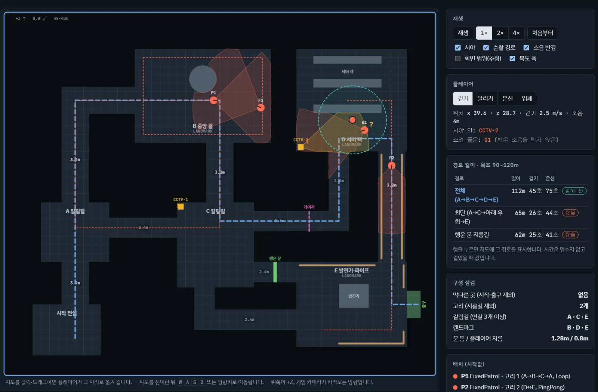
같은 자리 · 같은 카메라로 찍은 지금 화면과 시안을 슬라이더로 겹쳐 보며 2층 분위기를 판단했습니다.
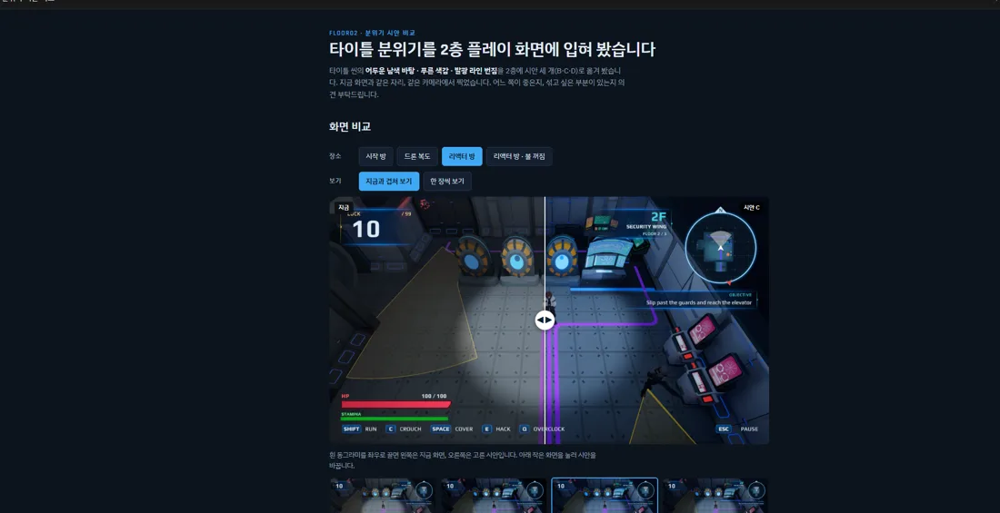
2층에서 찾은 조명 굽기 방식을 가이드로 넘겨, 다른 팀원이 맡은 층에 각자 적용했습니다. 버그 노트 1개도 같은 방식으로 넘겼습니다.
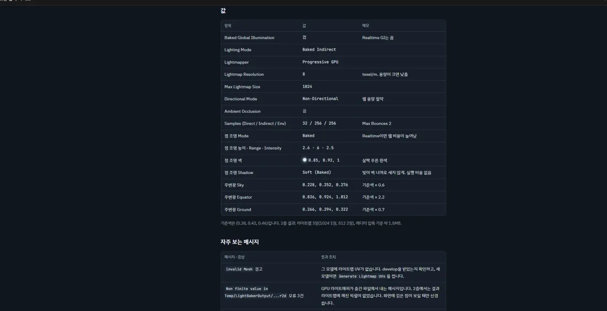
 아티팩트행운을 얻고 쓰는 흐름을 보여 준 미니게임 시안
아티팩트행운을 얻고 쓰는 흐름을 보여 준 미니게임 시안
빼앗은 행운을 길을 여는 비용과 적을 멈추는 스킬, 두 갈래로 쓰는 흐름도 시안으로 보여 주고 팀 동의를 받았습니다.
AI를 쓰는 방식이 서로 꼬이지 않도록 팀이 함께 공용 규칙을 정했습니다. 첫날 저장소에 AGENTS.md를 두어 Claude Code와 Codex가 같은 규칙을 읽게 하고, 공용 문서와 개인 문서를 나눠 관리했습니다.
탑뷰 청사진에서는 안 보이던 통로 막힘은 Unity에서 고쳤습니다. 그 뒤로 동선 · 시야는 아티팩트로, 통로 폭 같은 실측은 Unity에서 확인했습니다. 결정의 정본은 계획서(마크다운)에 뒀습니다.
천장이 뚫린 2층에 실시간 해 그림자가 대각선으로 졌습니다. 웹에서 돌아가는 게임이라, 실시간 조명을 늘리는 대신 조명을 미리 굽기로 했습니다.
시험 삼아 구워 보니 77개 중 32개가 빠졌습니다. 라이트맵용 UV(uv2)가 없고 기본 UV도 겹친 외부 에셋 모델이 "invalid Mesh"로 제외된 것이었습니다.
결과: 2026-11-12. 방 S와 북쪽 복도…의 렌더러 77개를 Static으로 지정하고 Baked 스포트 5개…로 구웠다. …
77개 중 32개가 굽기에서 빠졌다.ithappy 모델(벽 Panel, 바닥 Tile, 소파·책상·바리케이드 등)은 라이트맵 UV(uv2)가 없고 uv0도 겹쳐서 "invalid Mesh"로 제외된다.
메모리 안에서만 임시 UV를 넣어 다시 구워 보고 원인을 확인한 뒤, 팀 동의를 받아 1·2·3층이 쓰는 모델 230개에 Generate Lightmap UVs를 켰습니다.

다시 확인하니 uv2 없는 모델은 0개, 바뀐 파일은 설정 파일(.meta) 230개뿐이었습니다.

2층은 Baked 점 조명 81개·Light Probe 490개로 "invalid Mesh" 경고 없이 구웠습니다.
굽는 방법은 가이드로 정리해 넘겼고, 다른 층은 각 담당이 이 가이드를 보고 직접 구웠습니다.
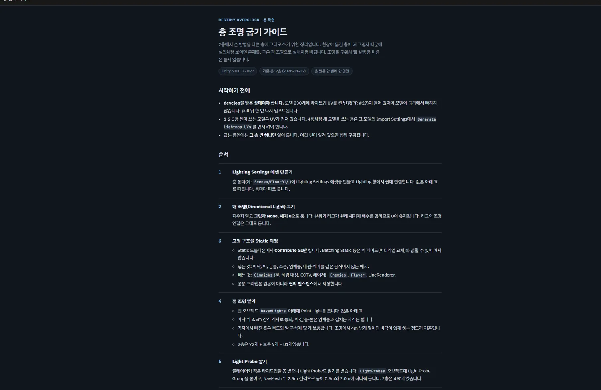
서브에이전트에 13번 맡긴 작업이 확인을 모두 통과했는데,

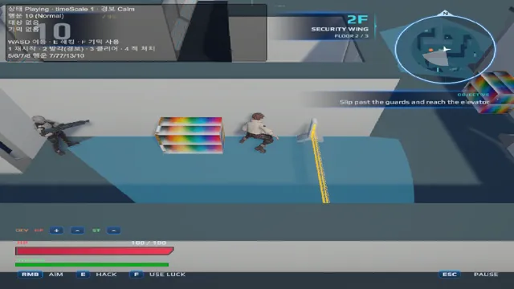


처음 직접 플레이한 1분 안에, 화면이 시작 지점 벽에 고정된 걸 발견했습니다.
서브들이 캡처용 _CaptureCam(DontSave)을 지우지 않아 Editor 메모리에 4개 남음. 씬 파일에는 없지만 깊이 0이라 Main Camera(-1)를 덮어,
서브 보고는 모두 "임시 카메라 삭제"였음


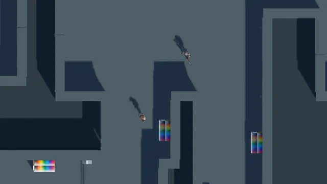

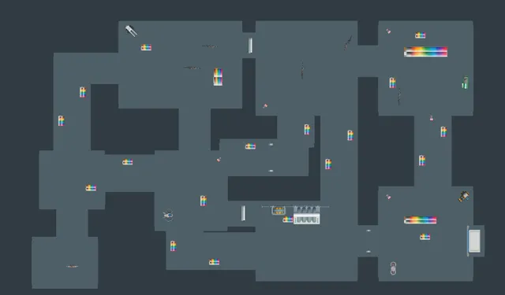
확인 캡처서브에이전트가 2층 본 씬을 단계마다 구성하며 남긴 화면
캡처용 임시 카메라 4개가 에디터 메모리에 남아 있었습니다. 씬 파일에는 없어서, 저장소만 보는 확인으로는 잡을 수 없었습니다.
확인 항목에 에디터 상태와 직접 플레이 지점을 넣었고, 에디터를 오래 붙잡는 작업은 위임에서 뺐습니다. 바꾼 뒤 첫 작업에서 직접 플레이가 보고에 없던 문제 2건(벽 안 좌표, 잘못 넣은 키)을 찾았습니다.
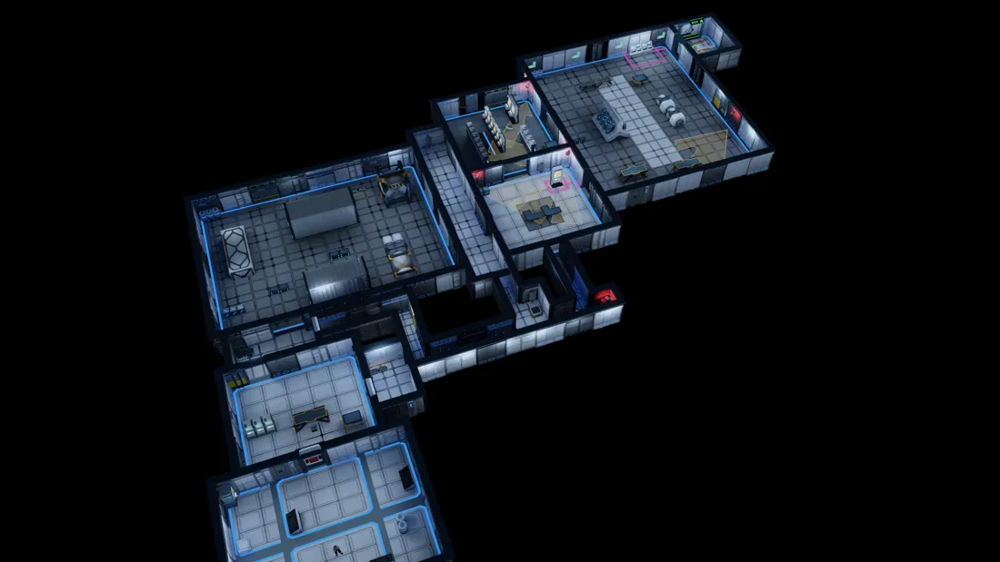
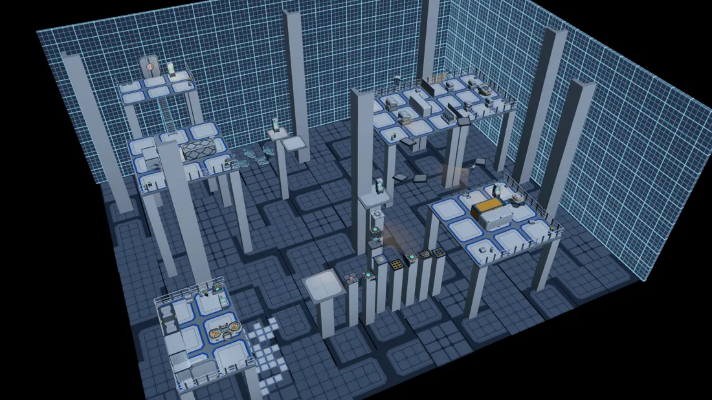

OpenAI Game Builders Seoul 2026 온라인 예선 제출작 · Unity 3D 액션 어드벤처 · 2026.08.22 – 08.26 (5일) · 2인 팀 · Unity 6.3 (C#, URP), WebGL
목적5일 안에 플레이할 수 있는 결과물을 내기 위해, Unity MCP를 처음 도입해 에디터 작업까지 맡기고 직접 플레이하며 검증하는 데 집중했습니다.
담당플레이어 · 카메라 · 사격 연동 · 방향성 중력 · 무중력 · 그래플
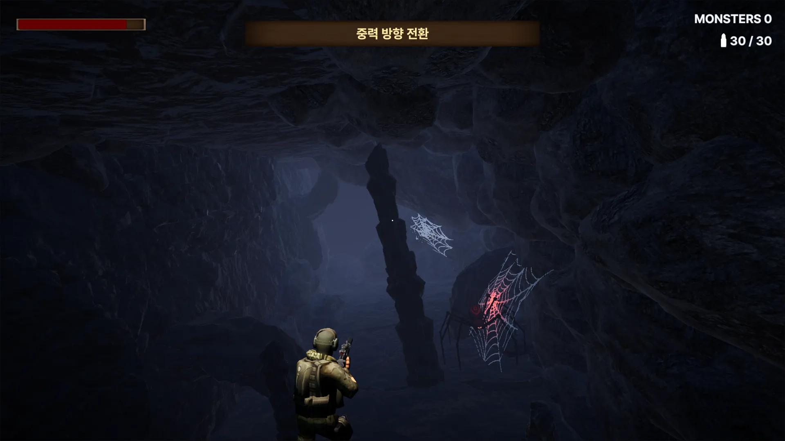
게임 화면중력 방향이 바뀌는 구간문제플레이어와 카메라가 서로 다른 기준 Up을 써서, 중력이 바뀌면 화면과 몸이 어긋났습니다.
해법보이는 Up 하나를 0.5초 동안 SmoothStep 곡선으로 축 회전시키고, 몸과 카메라가 이 값만 읽게 했습니다.
float easedProgress = Mathf.SmoothStep(코드하나의 Up 방향을 축 둘레로 돌립니다0f,1f, TransitionProgress); PresentationUp = ( Quaternion.AngleAxis(transitionAngle * easedProgress, transitionAxis) * transitionStartUp).normalized;…Vector3GetTransitionAxis(Vector3startUp,Vector3targetUp) {Vector3axis = Vector3.Cross(startUp, targetUp); if (axis.sqrMagnitude >= Mathf.Epsilon) return axis.normalized;Vector3fallback = Mathf.Abs(Vector3.Dot(startUp, Vector3.forward)) <0.99f? Vector3.forward : Vector3.right; return Vector3.Cross(startUp, fallback).normalized; }
AI · Unity MCP로 씬 · Prefab · Play Mode까지 에이전트에게 맡기고, 완료는 직접 Play Mode로 확인했습니다.
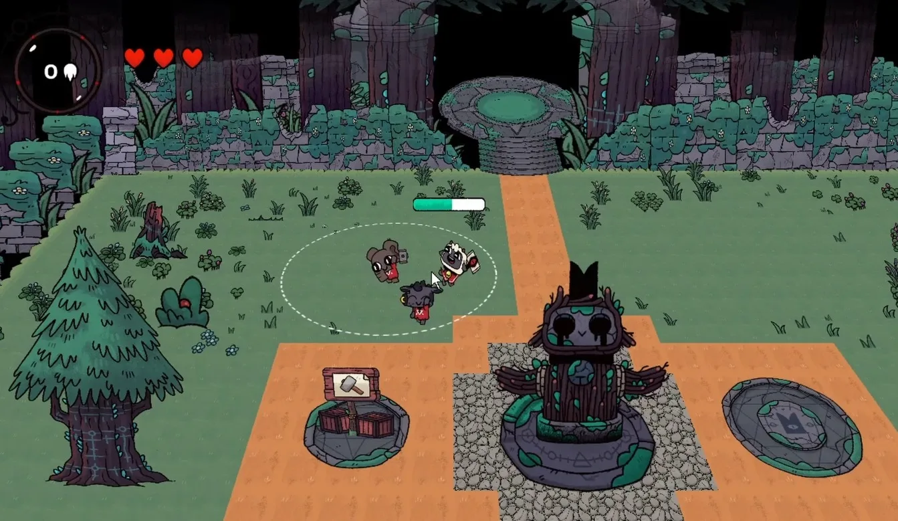
빌보드와 방향별 스프라이트로 2D를 3D 공간에 올린 2.5D 팀 프로젝트
담당플레이어 구조 · 전투, 마을 건축, NPC 행동 · 마을 콘텐츠, 카메라 제어
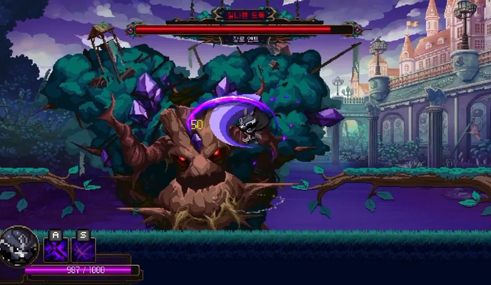
WinAPI 2D와 DirectX 11 지식을 바탕으로 만든 2D 액션 게임
담당렌더링 기반, 플레이어 상태, 충돌 판정, 보스 파츠 · 페이즈, 씬 흐름
프로젝트마다 목적과 기간이 달라서, AI를 쓰는 방식도 그에 맞춰 새로 정했고, 앞 프로젝트에서 익힌 방식을 다음에 한 단계씩 넓혀 갔습니다. 어느 쪽이든 무엇을 만들지 정하고 결과를 확인하는 일은 제가 맡았습니다.
DirectX 11 학습 · 프레임워크 구성
계획서와 페어 프로그래밍
100 완료 문서 · 26 폐기 문서
팀 프로젝트의 완성도
안전장치와 팀 규칙
hook이 거부한 것 · 파괴적 git 명령, 데이터 테이블 직접 수정, 원본을 읽지 않은 셰이더 수정
5일 안에 플레이할 수 있는 결과물
에디터까지 맡기고 검증에 집중
142 MCP 제공 툴 · 33 사용 기록(건)
9일 잼, 밀도 높은 3인 팀 작업
팀이 함께 보는 AI 결과물
24 아티팩트 · 35 계획서 · 44 단계별 위임